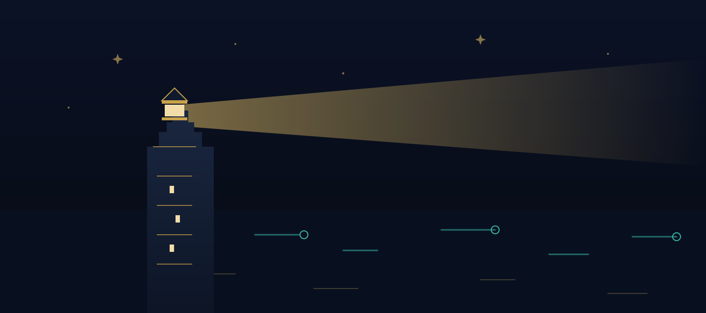

CheckPoint
A door that opens without judgment.
Vrata koja se otvaraju bez osude.
A CheckPoint is a community-based center where testing, counseling and prevention support are free, confidential and calm — designed around people, not paperwork.
CheckPoint je centar u zajednici gdje su testiranje, savjetovanje i podrška prevenciji besplatni, povjerljivi i mirni – osmišljen oko ljudi, a ne papirologije.
The model, in one eveningModel, u jednoj večeri
Community-based CheckPoint centers exist across Europe. The idea is simple: bring HIV and STI testing, counseling and prevention conversations out of intimidating corridors and into welcoming spaces run with and for the community — often with evening hours, rapid tests, anonymous options and staff trained to treat a sexual-health question as exactly that: a health question.
CheckPoint centri u zajednici postoje diljem Europe. Ideja je jednostavna: izvući testiranje na HIV i spolno prenosive infekcije, savjetovanje i razgovore o prevenciji iz zastrašujućih hodnika u ugodne prostore koji se vode sa zajednicom i za zajednicu – često s večernjim radnim vremenom, brzim testovima, mogućnošću anonimnosti i osobljem obučenim da pitanje o spolnom zdravlju tretira upravo kao to: zdravstveno pitanje.
Low thresholdNizak prag
No referral maze, no cost barrier, no waiting-room theatre. Walking in should be the easiest step, not the hardest.
Bez labirinta uputnica, bez troškovne prepreke, bez kazališta u čekaonici. Ući bi trebao biti najlakši korak, a ne najteži.
Confidential by designPovjerljivo po dizajnu
Confidential always, anonymous where possible. What is said in the room serves the person's care — nothing else.
Uvijek povjerljivo, anonimno gdje je moguće. Ono što se kaže u sobi služi skrbi za osobu – i ničemu drugom.
Counseling firstSavjetovanje na prvom mjestu
A test is a moment; a conversation is a route. Before and after every result, someone explains what it means and what comes next.
Test je trenutak; razgovor je ruta. Prije i poslije svakog rezultata netko objasni što znači i što slijedi.
Why a network, not a single addressZašto mreža, a ne jedna adresa
One good center in the capital helps the capital. Episode three of our story exists because distance is where stigma hides: when the nearest fitting door is three hours away, many people simply never open it. A connected network — fixed points, mobile teams and clear digital navigation — turns a lucky exception into a normal service.
Jedan dobar centar u glavnom gradu pomaže glavnom gradu. Treća epizoda naše priče postoji zato što se stigma skriva u udaljenosti: kad su najbliža odgovarajuća vrata tri sata vožnje daleko, mnogi ih jednostavno nikad ne otvore. Povezana mreža – stalne točke, mobilni timovi i jasna digitalna navigacija – pretvara sretnu iznimku u normalnu uslugu.
A note on this prototypeNapomena o ovom prototipu
This page describes the general community-testing model for campaign purposes. Before public launch, descriptions should be verified with the organizations actually running CheckPoint services in Croatia, so that hours, locations and offerings are stated precisely.
Ova stranica opisuje opći model testiranja u zajednici u svrhu kampanje. Prije javnog pokretanja opise treba provjeriti s organizacijama koje stvarno vode CheckPoint usluge u Hrvatskoj, kako bi radno vrijeme, lokacije i ponuda bili navedeni precizno.